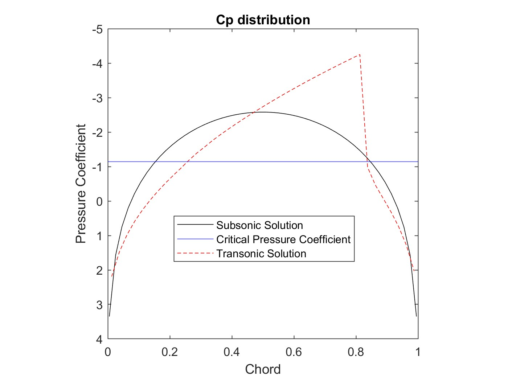
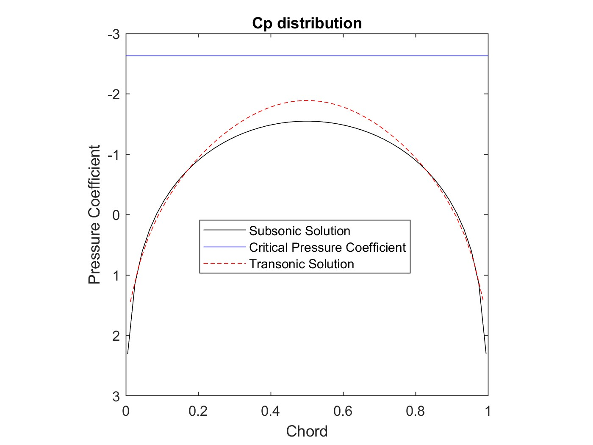

Prandtl-Glauert Equation Approximation via Numerical Methods
Flow simulated around an airfoil at transonic Mach Number
100 x 100 mesh generated to simulate pertubation potential field
Jacobi iteration method used to solve perturbation potential field
Solved for drag and pressure distribution
Algorithm Outputs
Transonic Similarity Parameter, K = 1.3
Transonic Similarity Parameter, K = 3


Matlab Code (K = 1.3)
Matlab Code (K = 3)
* Click here for full AIAA project report *